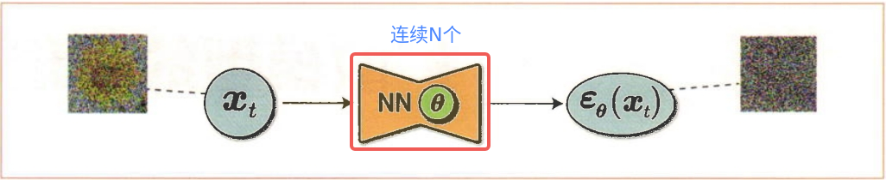
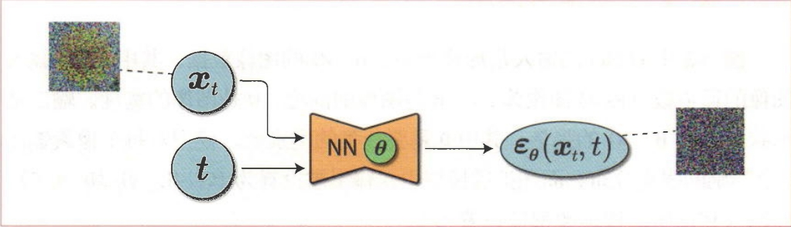
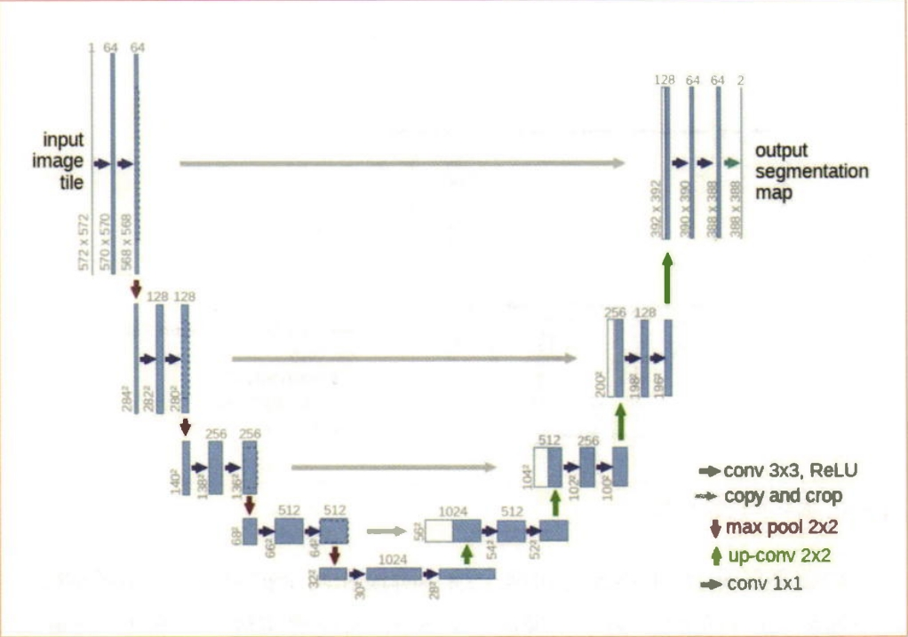
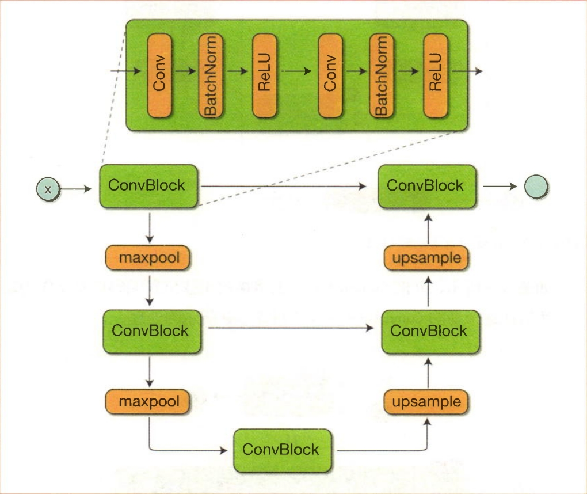
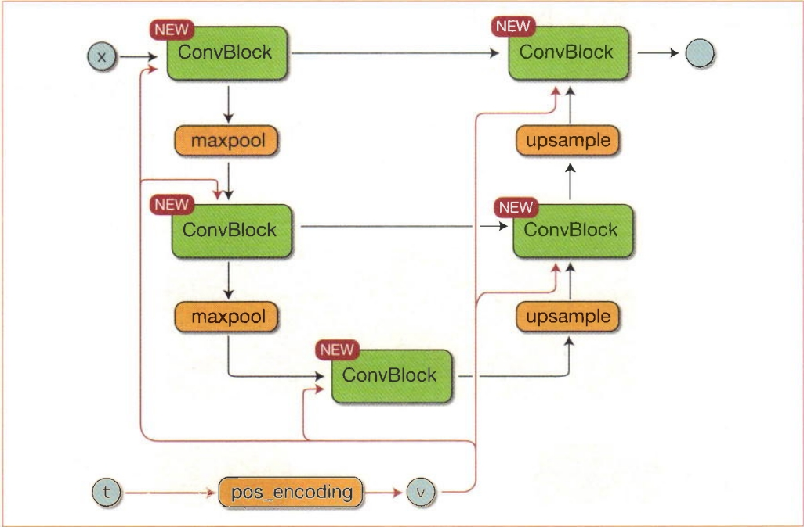
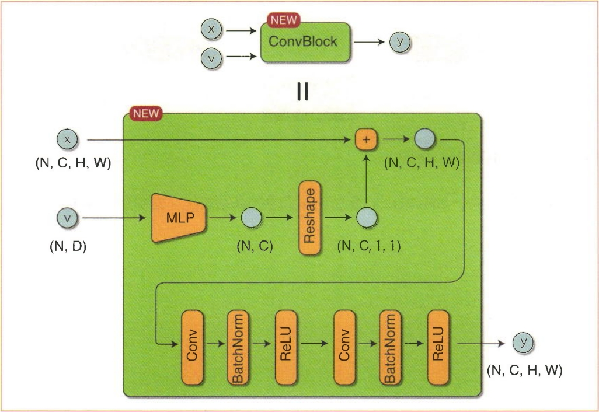
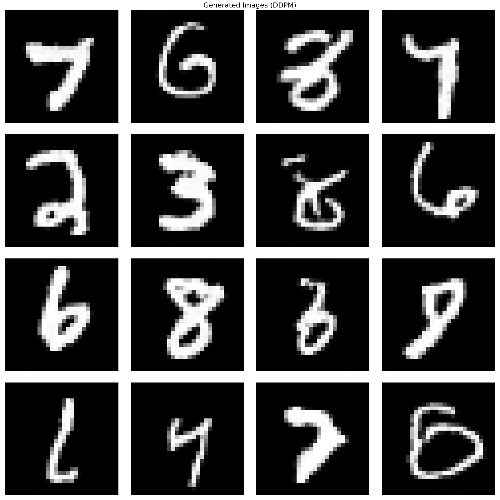
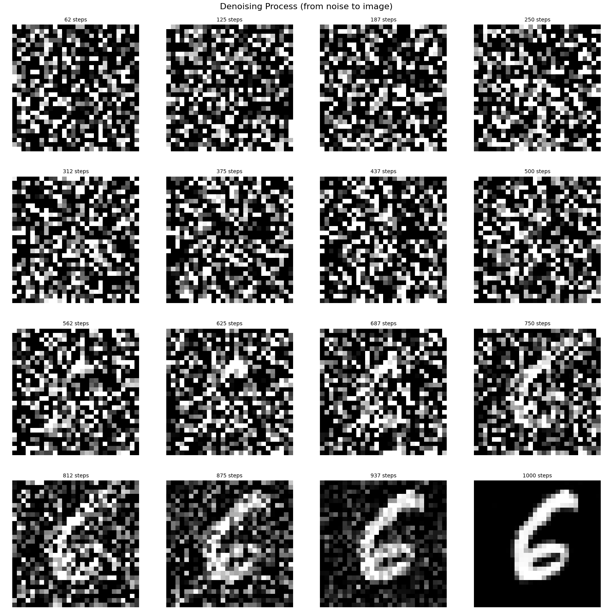

接下来进行DDPM的实现。DDPM能够通过学习去噪过程来生成高质量的图像。
根据理论篇的内容可知，DDPM的优化目标可以简化为预测噪声的均方误差:
\[\text{Loss}(\mathbf{x}_0; \theta) = \|\hat{\epsilon}_\theta(\mathbf{x}_t, t) - \epsilon\|_2^2\]
其中:
DDPM的目标是最小化预测噪声和真实噪声之间的平方误差。在神经网络的训练过程中，我们使用MSE损失函数:
\[\text{LOSS} = \text{MSE}(\hat{\epsilon}_\theta(\mathbf{x}_t, t), \epsilon)\]
这种损失函数非常简洁，模型只需要学习预测噪声，而不需要直接预测原始图像，这使得训练更加稳定和高效。
按照之前的思路，我们设计的神经网络应该如图1所示，于是就变成了N个相同结构的神经网络。

图1 N个相同结构的神经网络
我们之前发现整个denoise过程的网络结构完全是一样的，于是灵光一闪:我们不如增加一个输入“时刻t”，用于记录denoise的时刻，这样就不需要N个相同的神经网络了，于是网络就变成了图2所示的结构。

图2 带时间步输入的神经网络
DDPM使用U-Net架构来预测噪声。U-Net是一种语义分割网络，其网络结构如图3所示。U-Net的名称源于网络结构的形状，因为它与字母“U”的形状相似。

图3 U-Net的网络结构
U-Net的处理过程分为前半部分的“缩小阶段”和后半部分的“扩大阶段”。在前半部分的缩小阶段中，在卷积层进行处理的同时，特征图会逐渐缩小。缩小特征图的层称为“下采样层”（down-sampling layer）。在后半部分的扩大阶段中，在卷积层进行特征抽取的同时，特征图会逐渐扩大，这与前半部分正好相反。扩大特征图的层称为“上采样层”（up-sampling layer）。
U-Net的重要特征是跳跃连接（skip connection）。这是一种在网络的缩小阶段和扩大阶段之间直接传递特征图的机制。这种跳跃连接使得U-Net能够捕捉对象整体的特征，同时使用更精细的空间位置信息进行处理。在DDPM中，跳跃连接帮助模型在去噪过程中保留图像的细节信息，这对于生成高质量的图像至关重要。
在我们的任务中，我们简化了U-Net的结构，如图4所示。

图4 新U-Net的网络结构
接下来，我们需要思考，“时刻t”参数如何添加到U-Net网络，很显然直接添加固然不行，于是我们想到了在CVAE中我们添加条件（label）的处理方式，即增加一个Embedding网络，这里我们类似操作，使用Transformer模型常用的正弦位置编码，如图5所示，对比图4，我们发现其中的ConvBlock类新增了正弦位置编码信息v作为输入。

图5 加入正弦位置编码的U-Net
正弦位置编码因在论文“Attention Is All You Need”的Transformer模型中使用而闻名。正弦位置编码的意思是“使用正弦波（sin波）对位置信息进行编码”。位置信息是指序列数据中每个元素出现的位置。例如，在自然语言处理任务中，单词出现的位置就相当于位置信息。扩散模型的时刻 \(t\) 也是位置信息。
正弦位置编码可以将整数 \(t\) 变换为向量。如果变换后的向量 \(v\) 的维度为 \(D\)，则其第 \(i\) 个元素的数学式如下所示:
\[v_i = \begin{cases} \sin\left(\frac{t}{10000^{i/D}}\right) & \text{（$i$ 为偶数时）} \\ \cos\left(\frac{t}{10000^{(i-1)/D}}\right) & \text{（$i$ 为奇数时）} \end{cases}\]
上面的正弦位置编码不以绝对值来编码位置信息，而是通过具有循环特性的 \(\sin\) 函数和 \(\cos\) 函数来编码位置信息。这样一来，位置信息中的相对差异和循环模式就能清晰地显示出来，使模型能够更有效地学习序列数据中的相对位置关系。
正弦编码的代码如下所示:
def _pos_encoding(time_idx, output_dim, device='cpu'):
"""位置编码的单个时间步实现"""
t, D = time_idx, output_dim
v = torch.zeros(D, device=device)
i = torch.arange(0, D, device=device)
div_term = torch.exp(i / D * math.log(10000))
v[0::2] = torch.sin(t / div_term[0::2])
v[1::2] = torch.cos(t / div_term[1::2])
return v
def pos_encoding(timesteps, output_dim, device='cpu'):
"""批量位置编码"""
batch_size = len(timesteps)
device = timesteps.device
v = torch.zeros(batch_size, output_dim, device=device)
for i in range(batch_size):
v[i] = _pos_encoding(timesteps[i], output_dim, device)
return v我们展开图5，查看新的ConvBlock内部的信息，特别是变量的维度，如图5所示。

图6 ConvBlock内部信息
从图6中可以看到，\(x\) 的形状为 \((N, C, H, W)\)，\(v\) 的形状为 \((N, D)\)。\(v\) 被MLP（多层感知机，这里指由全连接层组成的神经网络）变换为 \((N, C)\) 的形状，然后再被变换为 \((N, C, 1, 1)\) 的形状。通过这个变形，广播机制得以应用于随后的加法运算中。新的ConvBlock的实现如下所示。
class ConvBlock(nn.Module):
"""带时间嵌入的卷积块"""
def __init__(self, in_ch, out_ch, time_embed_dim):
super().__init__()
self.convs = nn.Sequential(
nn.Conv2d(in_ch, out_ch, 3, padding=1),
nn.BatchNorm2d(out_ch),
nn.ReLU(),
nn.Conv2d(out_ch, out_ch, 3, padding=1),
nn.BatchNorm2d(out_ch),
nn.ReLU()
)
self.mlp = nn.Sequential(
nn.Linear(time_embed_dim, in_ch),
nn.ReLU(),
nn.Linear(in_ch, in_ch)
)
def forward(self, x, v):
N, C, _, _ = x.shape
v = self.mlp(v)
v = v.view(N, C, 1, 1)
y = self.convs(x + v)
return y其中参数 time_embed_dim 是通过正弦位置编码变换后的向量的维度。名为 self.mlp 的全连接层可以将维度为 time_embed_dim 的向量变换为维度为 in_ch 的向量。
最后使用这个新的ConvBlock类来实现UNet类。
class UNet(nn.Module):
"""U-Net 架构用于预测噪声"""
def __init__(self, in_ch=1, time_embed_dim=100):
super().__init__()
self.time_embed_dim = time_embed_dim
# 编码器（下采样）
self.down1 = ConvBlock(in_ch, 64, time_embed_dim)
self.down2 = ConvBlock(64, 128, time_embed_dim)
self.bot1 = ConvBlock(128, 256, time_embed_dim)
# 解码器（上采样）
self.up2 = ConvBlock(128 + 256, 128, time_embed_dim)
self.up1 = ConvBlock(128 + 64, 64, time_embed_dim)
self.out = nn.Conv2d(64, in_ch, 1)
self.maxpool = nn.MaxPool2d(2)
self.upsample = nn.Upsample(scale_factor=2, mode='bilinear')
def forward(self, x, timesteps):
# 时间步位置编码
v = pos_encoding(timesteps, self.time_embed_dim, x.device)
# 编码器路径
x1 = self.down1(x, v)
x = self.maxpool(x1)
x2 = self.down2(x, v)
x = self.maxpool(x2)
# 瓶颈层
x = self.bot1(x, v)
# 解码器路径（带跳跃连接）
x = self.upsample(x)
x = torch.cat([x, x2], dim=1)
x = self.up2(x, v)
x = self.upsample(x)
x = torch.cat([x, x1], dim=1)
x = self.up1(x, v)
x = self.out(x)
return x关键特性: 1. 时间嵌入:通过位置编码将时间步 \(t\) 嵌入到网络中，使模型能够区分不同时间步的噪声水平 2. U-Net结构:编码器-解码器架构，通过跳跃连接保留细节信息 3. 时间条件:每个卷积块都接收时间嵌入，使网络能够根据时间步调整去噪策略
我们定义Diffuser 类管理前向扩散过程和反向去噪过程:
class Diffuser:
"""扩散过程管理器"""
def __init__(self, num_timesteps=1000, beta_start=0.0001, beta_end=0.02, device='cpu'):
self.num_timesteps = num_timesteps
self.device = device
# 线性调度:beta从beta_start线性增长到beta_end
self.betas = torch.linspace(beta_start, beta_end, num_timesteps, device=device)
self.alphas = 1 - self.betas
self.alpha_bars = torch.cumprod(self.alphas, dim=0) # 累积乘积
def diffusion(self, x_0, t):
"""前向扩散过程:向图像添加噪声"""
# 根据公式:x_t = sqrt(alpha_bar_t) * x_0 + sqrt(1 - alpha_bar_t) * epsilon
t_idx = t - 1
alpha_bar = self.alpha_bars[t_idx].view(-1, 1, 1, 1)
noise = torch.randn_like(x_0, device=self.device)
x_t = torch.sqrt(alpha_bar) * x_0 + torch.sqrt(1 - alpha_bar) * noise
return x_t, noise
def denoise(self, model, x, t):
"""反向去噪过程:从噪声中恢复图像"""
t_idx = t - 1
alpha = self.alphas[t_idx].view(-1, 1, 1, 1)
alpha_bar = self.alpha_bars[t_idx].view(-1, 1, 1, 1)
alpha_bar_prev = self.alpha_bars[t_idx-1].view(-1, 1, 1, 1)
# 模型预测噪声
model.eval()
with torch.no_grad():
eps = model(x, t)
model.train()
# 计算去噪后的均值
mu = (x - ((1-alpha) / torch.sqrt(1-alpha_bar)) * eps) / torch.sqrt(alpha)
# 计算方差
std = torch.sqrt((1-alpha) * (1-alpha_bar_prev) / (1-alpha_bar))
# 采样（在t=1时不添加噪声）
noise = torch.randn_like(x, device=self.device)
noise[t == 1] = 0
return mu + noise * std
def sample(self, model, x_shape):
"""从随机噪声生成图像"""
batch_size = x_shape[0]
x = torch.randn(x_shape, device=self.device)
# 从T步逐步去噪到1步
for i in range(self.num_timesteps, 0, -1):
t = torch.tensor([i] * batch_size, device=self.device, dtype=torch.long)
x = self.denoise(model, x, t)
return x关键方法: 1. diffusion:前向过程，根据公式41添加噪声 2. denoise:反向过程，使用模型预测的噪声进行去噪 3. sample:完整的生成过程，从纯噪声逐步去噪生成图像
接下来实现基于 \(q(x_t|x_0)\) 采样的处理。\(q(x_t|x_0)\) 可以用解析的方式表示，如下所示。
超参数的关系式:
\[\alpha_t = 1 - \beta_t\]
\[\bar{\alpha}_t = \prod_{i=1}^{t} \alpha_i\]
概率分布:\(q(x_t|x_0)\)
\[q(x_t|x_0) = \mathcal{N}(x_t; \sqrt{\bar{\alpha}_t} x_0, (1 - \bar{\alpha}_t) I)\]
基于 \(q(x_t|x_0)\) 采样:
\[\epsilon \sim \mathcal{N}(0, I)\]
\[x_t = \sqrt{\bar{\alpha}_t} x_0 + \sqrt{1 - \bar{\alpha}_t} \epsilon\]
代码非常简单，如下所示:
def diffusion(self, x_0, t):
"""前向扩散过程:向图像添加噪声"""
# 根据公式:x_t = sqrt(alpha_bar_t) * x_0 + sqrt(1 - alpha_bar_t) * epsilon
t_idx = t - 1
alpha_bar = self.alpha_bars[t_idx].view(-1, 1, 1, 1)
noise = torch.randn_like(x_0, device=self.device)
x_t = torch.sqrt(alpha_bar) * x_0 + torch.sqrt(1 - alpha_bar) * noise
return x_t, noise扩散模型的数据生成过程可以用以下数学公式表示。
扩散模型的数据生成方法:
初始化:从标准高斯分布采样初始噪声 \[x_T \sim \mathcal{N}(0, I)\]
逐步去噪:对于 \(t = T, T-1, \ldots, 1\)，执行以下步骤:
采样随机噪声（在 \(t=1\) 时设为0）: \[\epsilon \sim \mathcal{N}(0, I), \quad \text{若} \ t = 1 \ \text{则} \ \epsilon = 0\]
计算方差: \[\sigma_t = \sqrt{\frac{(1 - \alpha_t)(1 - \bar{\alpha}_{t-1})}{1 - \bar{\alpha}_t}}\]
计算去噪后的图像: \[x_{t-1} = \frac{1}{\sqrt{\alpha_t}} \left(x_t - \frac{1 - \alpha_t}{\sqrt{1 - \bar{\alpha}_t}} \hat{\epsilon}_\theta(x_t, t)\right) + \sigma_t \epsilon\]
返回结果:最终得到生成的图像 \(x_0\)。
代码如下所示，注意到其中蕴含与VAE类似的“重参数化技巧”
def denoise(self, model, x, t):
"""反向去噪过程:从噪声中恢复图像"""
t_idx = t - 1
alpha = self.alphas[t_idx].view(-1, 1, 1, 1)
alpha_bar = self.alpha_bars[t_idx].view(-1, 1, 1, 1)
alpha_bar_prev = self.alpha_bars[t_idx-1].view(-1, 1, 1, 1)
# 模型预测噪声
model.eval()
with torch.no_grad():
eps = model(x, t)
model.train()
# 计算去噪后的均值
mu = (x - ((1-alpha) / torch.sqrt(1-alpha_bar)) * eps) / torch.sqrt(alpha)
# 计算方差
std = torch.sqrt((1-alpha) * (1-alpha_bar_prev) / (1-alpha_bar))
# 采样（在t=1时不添加噪声）
noise = torch.randn_like(x, device=self.device)
noise[t == 1] = 0
return mu + noise * std训练过程的核心代码:
def train_step(model, diffuser, x_0, optimizer):
"""单步训练"""
# 1. 随机采样时间步
t = torch.randint(1, num_timesteps+1, (len(x_0),), device=device)
# 2. 前向扩散:添加噪声
x_t, noise = diffuser.diffusion(x_0, t)
# 3. 模型预测噪声
noise_pred = model(x_t, t)
# 4. 计算MSE损失
loss = F.mse_loss(noise, noise_pred)
# 5. 反向传播
loss.backward()
optimizer.step()
return loss.item()训练流程说明: 1. 随机采样时间步:每个batch随机采样不同的时间步 \(t \in [1, T]\) 2. 前向扩散:根据采样时间步向原始图像添加噪声 3. 预测噪声:模型接收噪声图像和时间步，预测添加的噪声 4. 计算损失:MSE损失，最小化预测噪声和真实噪声的差异 5. 反向传播:更新模型参数
代码中的生成过程展示了DDPM的生成能力:
# 模型推理 - 生成新图像
if infer:
model.eval()
print('\n开始生成图像...')
# 从纯噪声开始
x_shape = (sample_size, in_channel, img_size, img_size)
images = diffuser.sample(model, x_shape)
# 显示生成的图像
show_images(images)
图7 生成的新图像
代码还展示了去噪过程的中间步骤:
# 显示去噪过程（16个中间步骤）
num = num_timesteps / 16 # 每步的步长
# 使用相同的噪声起点
torch.manual_seed(42)
noise = torch.randn(x_shape, device=device)
# 在一次完整的去噪过程中，保存中间图像
_, intermediate_images, timestep_labels = diffuser.sample_with_intermediate_steps(
model, x_shape=x_shape, step_interval=num, noise=noise
)
# 显示去噪过程
show_denoising_process(intermediate_images, timestep_labels)
图8 去噪过程可视化
可视化效果: - 展示了从纯噪声到清晰图像的渐进过程 - 可以看到模型如何逐步去除噪声 - 验证了去噪过程的连续性和稳定性
去噪扩散概率模型（DDPM） 通过以下关键创新实现了高质量的图像生成:
DDPM的实现相对简单，但效果显著，为理解和使用扩散模型提供了良好的起点。 DDPM的成功证明了逐步去噪是一种有效的生成模型策略，为后续的扩散模型变体（如DDIM、Stable Diffusion等）奠定了基础。
code/dl/dm/ddpm/
├── unet.py # U-Net网络定义
├── ddpm.py # 扩散过程管理器
├── train_infer.py # 训练和推理主程序
├── config.yaml # 配置文件
└── ddpm_model.pth # 训练好的模型权重unet.py):噪声预测网络
ddpm.py):扩散过程管理
diffusion:前向扩散过程denoise:单步去噪过程sample:完整生成过程train_infer.py):主程序
通过 config.yaml 可以灵活配置:
model:
img_size: 28 # 图像尺寸
in_channel: 1 # 输入通道数
time_embed_dim: 128 # 时间嵌入维度
diffusion:
num_timesteps: 1000 # 扩散步数
beta_start: 0.0001 # beta起始值
beta_end: 0.02 # beta结束值
training:
epochs: 30 # 训练轮数
learning_rate: 0.001 # 学习率
batch_size: 32 # 批次大小